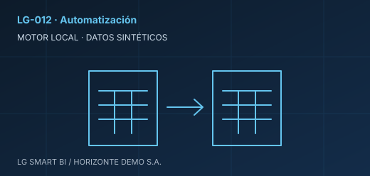

Automatización de archivos Excel y CSV
Convierte archivos CSV pequeños de ejemplo entre separadores y permite descargar el resultado.
Herramienta funcional para CSV en navegador
Problema empresarial
La recepción de archivos con diferentes delimitadores puede dificultar cargas y conciliaciones.
Solución representativa
Arquitectura de herramientas Python/Pandas para procesar archivos Excel y CSV, validar datos, transformar información y reducir tareas manuales. La demostración ejecutable es un conversor CSV local con selección explícita de delimitador, validación de estructura, vista previa y descarga.
Implementación independiente de demostración. La experiencia y el enfoque técnico se presentan sin reutilizar código o datos de clientes.
Arquitectura
Demostración funcional — entorno ficticio
Empresa ficticia: Horizonte Demo S.A. · Moneda: guaraníes (PYG), sin decimales. Todos los nombres, referencias e importes son sintéticos. Las operaciones ocurren en el navegador y no acceden a infraestructura empresarial.
Cargando demostración local…
¿Necesitás una solución similar?
Podemos diseñar una implementación adaptada a las fuentes, procesos y controles de tu empresa.
Consultar por correo Otras formas de contacto